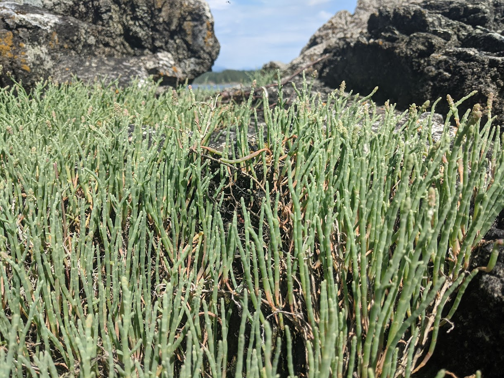

Radiation transfer in plant canopies
Transmission of solar radiation in a foggy Westcoast Forest (Photo: A. Christen)

Photo: A. Christen
Learning Objectives
- Describe how is short-wave radiation is distributed within a plant canopy.
- Explain how different wavelengths behave differently within the canopy.
- Understand how radiation distribution affect photosynthesis in a plant canopy.

Photo: A. Christen

T.R. Oke (1987): Boundary Layer Climates
I(x)
I(x)
x = 0
Solar and net radiation in plant canopies
Measurements demonstrate that Beer’s law roughly applies in uniform canopies (grass)

1 m2
1 m2
What is the LAI?


Modifying Beer’s Law to apply
to plant canopies
The leaf area index is the one-sided leaf area per unit ground area. Cumulative LAI (L) = sum of LAI starting at top of canopy

Grass
Maize
Cotton
Beer’s Law modified for plant canopies
- We rewrite Beer’s Law for solar (S) radiation as:
- where S0 is solar irradiance above the canopy, Su is solar irradiance under the canopy, L is the cumulative LAI and G is the plant canopy extinction coefficient.


Photo: A. Christen
Orientation of canopy leaf area?


Leaf orientation
- The canopy extinction coefficient is often called the projection coefficient because it’s related to the orientation of the leaves: erectophile or planophile in relation to the sun angle.

Direct beam transmissions into canopies

Photo: A. Black
How does radiation beneath a canopy change with season?

Day of year
Photo: A. Black
Radiation above & below boreal aspen canopy
How does radiation beneath a canopy change with season?